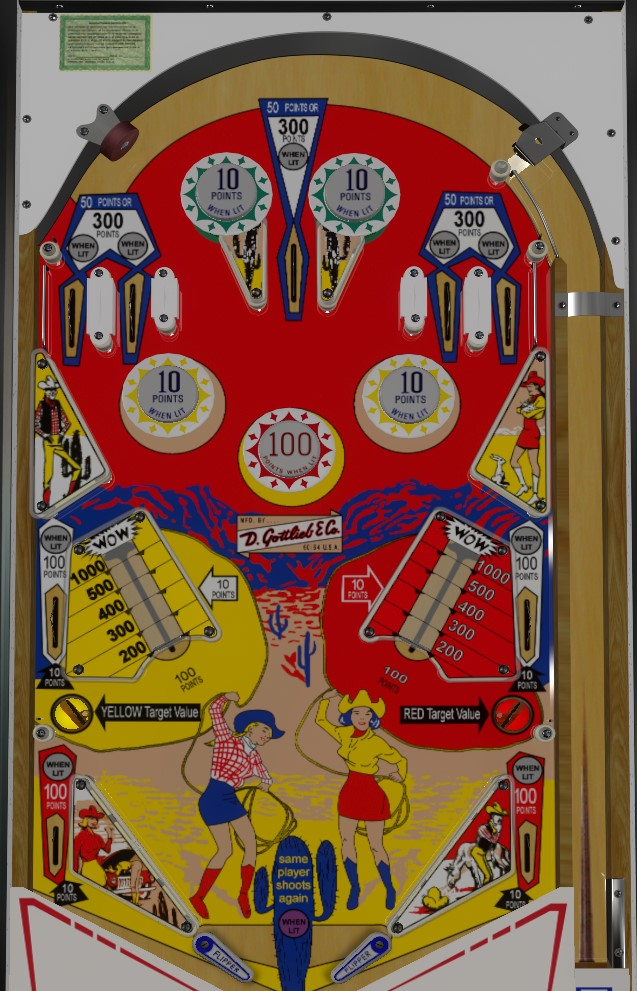

Wild Wild West is the 2-player replay version. Lariat is the very rare 2-player add-a-ball version. This guide focuses primarily on Wild Wild West, with differences observed in Lariat discussed at the end of the guide.
For small, safe points, flip up the center of the table, collecting points by the 10s and occasionally the 100s from the pop bumpers and side lanes. For riskier, big points, shoot vary-targets as far back as you can to build their value, then collect that value at the same side's lower saucer- collecting any vary-target resets that vary-target, and collecting a fully hit vary-target scores 1,000 points and an extra ball.
The below picture is of Wild Wild West, which was taken from the VPX recreation by Loserman76.
The top two pop bumpers are always lit for 10 points. For the lower bumpers, the outer yellow bumpers score 1 point or 10 when lit, and the center red bumper scores 10 points or 100 when lit. Either the red or yellow bumper(s) will be lit at any given time, but never both. Lit bumper colour toggles every time 100 points are scored.
The five top lanes are lit intermittently using the same every-100-points alternating rules. Unlit top lanes score 50 points and lit top lanes score 300.
One of the two is always lit, alternating every 100 points. Lit lane scores 100 points, unlit lane scores 10. These lanes typically can only be accessed from above and feed the lower saucers.
No points are given for pushing back a vary-target. Pushed back vary-targets stay where they are until the same side saucer is made. The saucer collects the vary-target value on the same side. An unpressed vary-target has a value of 100 points; the more it is pushed back, the more it is worth, and the value could be 200 points, 300, 400, 500, or 1,000 points + an extra ball. Collecting any value resets the position of that side's vary target. Maximum one extra ball per ball in play. Vary-target position is reset at the start of a game, but they are kept between balls and players, so in a 2-player game, it's possible to steal the value of a vary-target that the other player set up.
There are no in lanes. Flippers back up directly to the slingshots. Slingshots score 10 points. Out lanes score 10 points or 100 when lit, and exactly one of them is always lit, alternating every time 100 total points are scored.
There is no end-of-ball bonus.
All scoring on Lariat is multiplied by 10 due to the inclusion of a dummy score reel.
All rollover lanes around the table work differently. The 5 top lanes are lit with the numbers 1 through 5. Also, the 4 and 2 can be collected at the side lanes next to the vary-targets, and the 5 and 1 can be collected at the out lanes. Since the 3 can only be collected at the top of the table, plunging that top center lane is much more important on Lariat than on Wild Wild West. Roll through a lit lane to unlight it. Lit lanes score 2,000 points and unlit lanes score 500, no matter where they are on the table. Unlighting all 5 numbers scores an instant extra ball and relights all 5 numbers.
Up to 5 extra balls can be stored at a time. More than one extra ball can be earned per individual ball in play. Extra balls in reserve are indicated by how many jackrabbits are lit on the lower left of the backglass. One player keeps shooting until they drain with no extra balls lit.